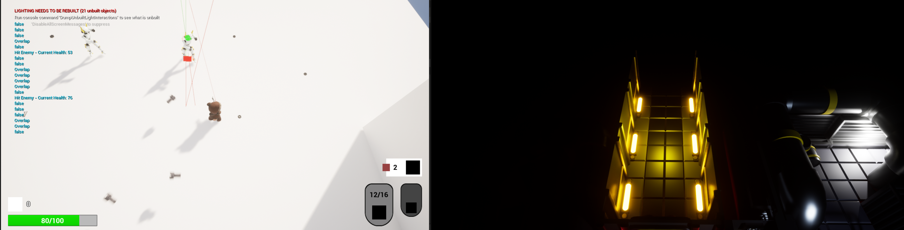
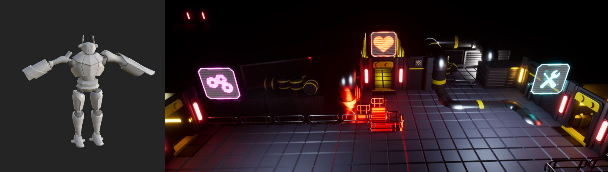
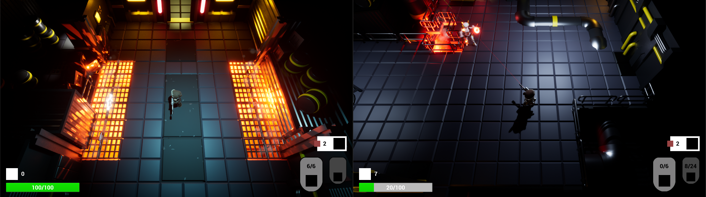

Monday, November 28th
On monday, my work consisted mainly of management, getting all aspects of the project, and our team up to date. We had some issues
with the design of the tutorial, so I got busy reworking it. I then spent some time making flowcharts for gameplay and screen flow.
David continued working on the room system, Anton kept doing AI behaviour and André implemented multiple weapon support.
Felicia worked on the final enemy model, Ellinor worked on environments and Victor created two game ready rooms.
Oskar mainly worked on animations, and Hari started writing dialogue for the shopkeeper.
Tuesday, November 29th
I started the day off making room designs for the tutorial in engine for the artists to fill with assets.
I then quickly got a system for doors working in Unreal blueprints.
David kept making progress on coding the rooms and doors while Anton made ranged enemies be able to attack the player.
Ellinor kept working on environments, Victor created two new rooms and Oskar worked on omnidirectional movement for
the player character and created a model for player death. Hari unfortunately contracted another illness, but did some more dialogue work from home.

Wednesday, November 30th
The first thing I worked on was getting the sound system fully set up with reverberations, which took me a while to figure out. Once I had finished the sound system I got to work finding royalty free sounds for them, and implemented some basic randomized shooting sounds for all the guns. I then made player footsteps make sounds when they impact the floor. Some aspects of the HUD were not entirely implemented, such as displaying numbers for health and the like, so I spent some time getting all of it game ready. We needed a temporary trigger for winning the game ready before the test on Friday, so I created a simple blueprint for a collision box that the player can enter to win. I then created an effect that fades the screen to black and back when the player dies and respawns.
Thursday, December 1st
Description.
Friday, December 2nd
Description.
